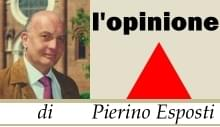

|
|
|
|
sabato, 29 settembre 2007 |
|
|
Notte sprecona
Gli antichi imperatori romani ne erano consapevoli oltre che grandi esperti in questa arte raffinata.
Quando avvertivano che il consenso dei sudditi nei loro confronti dava segnali di cedimento; oppure lo stato si trovava in una situazione di crisi; oppure qualche avventura militare non aveva dato i risultati sperati, ecco che scattava la trappola.
Con un'organizzazione perfetta, si dava inizio ad una serie di feste e spettacoli, che duravano per lungo tempo, grazie alle quali il popolino veniva eccitato e saziato e dimenticava così i problemi propri e dello stato.
Esemplare è il caso dell’imperatore Nerone, il quale dopo aver incendiato e distrutto Roma; dopo aver ucciso nel disastro migliaia di sudditi, ebbe il classico colpo d’ingegno del folle: accusare gli altri dell'accaduto.
Fu così che al popolino inferocito nei suoi confronti, offri uno spettacolo macabro e crudele nella sua grandiosità. Roma venne illuminata a giorno da migliaia di torce umane che avevano la sola colpa di essere cristiani.
Uno spettacolo analogo a quello degli imperatori romani si è avuto, in fine settembre, a San Giuliano Milanese quando il centro cittadino è stato coinvolto da innumerevoli momenti di festa, di suoni, di libagioni, di bancarelle, di esibizioni degli artisti di strada, per terminare con il sempre affascinante scoppio dei fuochi artificiali.
Il motivo scatenante era l’eccitazione per l’avvio dei lavori di smantellamento dell’elettroconduttura ad alta tensione che da decenni correva a pochi metri dalle abitazioni.
"Notte elettrica" è stata chiamata, ma di elettrica risulta la spesa, quindi il costo per i cittadini, che pare oscilli fra 50 e 70 mila euro, cioè 100 e 140 milioni delle vecchie lire.
Per una notte San Giuliano Milanese è stata inondata di luce, ma il futuro della città, del centro sportivo, della sicurezza, della viabilità, della cultura, dell’urbanistica, dei servizi, rimangono ancora nel buio. |
|
|
|
Marco Toni 02.10.2007
L'invidia è una brutta bestia.
La notte elettrica è stata a furor di popolo la più bella manifestazione mai fatta nella nostra città ed è costata meno della Battaglia dei Giganti....
Quello che mi interessa è il giudizio della gente, il resto è tutta aria fritta nell'olio dell'invidia...
|
|
Eugenio Grossi 06.10.2007
Ho letto il tuo ultimo articolo negli "ultimi aggiornamenti" sul sito dell'Associazione Culturale Zivido dal titolo "notte sprecona".
Sono d'accordo con te: gli antichi romani la sapevano lunga in fatto di "manipolazione delle masse". Mi sovviene il famoso motto "panem et circenses". Purtroppo da allora nulla pare cambiato.
Però ho un rimpianto: perchè nonstante tutto, i romani riuscirono a fondare e mantenere un impero che durò diversi secoli, mentre la nostra italietta, anche se giovane di un centinaio d'anni, è sempre di più impelagata in beghe da cortile.
....non dico che il mio desiderio sarebbe quello di vedere l'Italia allo stesso livello dell'antico Impero Romano, idea improponibile e impensabile, ma sarei nel giusto se desiderassi qualcosa di leggermente meglio della nostra attuale classe dirigente.
Tra l'altro, ho visto che molti tralicci sono ancora in piedi....boh?! |
|
Elena Merli 08.10.2007
Ritengo illogico e abbastanza patetico il commento del primo cittadino Marco Toni.... potrà, dati alla mano ovviamente, aver ragione sui costi che interessano la notte elettrica e la battaglia dei giganti... ma quale serietà adotta parlando di altri suoi concittadini che amministra e da cui è stato eletto, che si lamentano e discutono di costi?
Mi sembra, quella del sindaco, una battaglia tutta sua contro l'Associazione Culturale Zivido, di cui teme e forse rimpiange la forza e l'energia... notte elettrica, ma per favore facciamo i seri, che i tralicci sono ancora in "bella vista", spettacolare vista!!! Però abbiamo già festeggiato!!!!! (coi nostri soldi, come per la battaglia dei giganti del resto, su questo non discuto). Fatti, non parole!!! togliamo i tralicci e facciamo il parco, senza sprecare tempo utile a rispondere ad opinioni fondate su certezze. San Giuliano, come già scritto al sindaco, è lì da vedere. Non ci sono i soldi per intervenire su opere durature nel tempo, non sprechiamone allora in fuochi d'artificio.... fumo all'aria!!!!
Il parco brucia................. d'invidia perchè chi ha promesso non riesce a mantenere..... però i fuochi d'artificio erano davvero belli!! Peccato che non li ho visti! |
|
Marco Toni 09.10.2007
Caro Pierino,
leggendo il quotidiano "Il Cittadino" di questa mattina mi è venuta spontanea una battuta.
Intanto, prima di scrivere pubblicamente cose non vere (la Notte elettrica è costata meno della metà delle cifre che hai dichiarato) sarebbe stato opportuno informarsi.
In secondo luogo, se è vero che la riconoscenza non è di questo mondo, è altrettanto vero che la stupidità imperversa e pervade il cervello di molti.
Mi pare in ogni caso che il tentativo di gettare fango sull'Amministrazione e sulla più grande iniziativa di partecipazione di popolo mai tenuta nella nostra città, rappresenti per te un clamoroso autogol.
Buona giornata. |
|
Dr. Marco Magri 10.10.2007
Caro Esposti,
ha toccato una nota dolente per il nostro Sindaco (il peccato di lesa maestà è uno dei più gravi nella nostra città) e si è attirato le sue ire. Dovrebbe saperlo che chi la pensa diversamente dal potere a San Giuliano è sempre un nemico!
Non voglio entrare nel merito del dibattito sui costi, anche perchè sinceramente speravo non ci fosse.
Lo smantellamento dei tralicci è stata una ottima azione e la Notte elettrica così come tutto quanto legato alla Battaglia dei Giganti sono momenti sociali importanti per la nostra città.
Mi dispiace che a San Giuliano invece di essere vissuti come momenti di tutti (indipendentemente dal colore politico e dallo schieramento) diventino sempre una dimostrazione di forza di una parte che “… a furor di popolo” si sente giustificata ad autoesaltarsi.
Non vorrei spendere troppe parole (anche perché certe reazioni parlano meglio da sole), però una precisazione mi sembra importante: nel verbale della Commissione Consiliare sul Bilancio del 25 Settembre (documento visibile sul sito www.cittanuova-sangiuliano.it) si legge testualmente: (la Dirigente del settore finanziario del Comune) spiega che l’aumento di 50.000 euro per il capitolo delle prestazioni attività culturali e ricreative è dovuto all’aumento dei costi per la manifestazione "Notte Elettrica".
Temo quindi che non solo Esposti debba documentarsi meglio ma anche qualcun altro.
Distinti saluti |
|
Marco Toni 11.10.2007
Caro Direttore, prendo spunto dalla lettera pubblicata il 9 ottobre sul Cittadino, anche se non è mia abitudine replicare alle critiche inviate ai giornali e non esposte "a viso aperto" direttamente all'Amministrazione Comunale. A muovere le critiche in questo caso, è il signor Esposti Pierino, rappresentante nominato dal sottoscritto nel Consiglio di Amministrazione della società pubblica Rocca Brivio Sforza e Presidente dell'Associazione Culturale Zivido, che avrebbe, quindi, svariate occasioni per manifestare il proprio pensiero in maniera trasparente e diretta.
Proprio per il rispetto della trasparenza, comincio con il rendere nota la cifra reale spesa da Comune per la "Notte Elettrica": 35.391 euro totali, somma ben lontana dai numeri "strabilianti" (70.000 euro) inventati dal sig. Esposti.
Mi stupisce poi che lo stesso Esposti, organizzatore da molti anni della rievocazione storica della Battaglia dei Giganti, e tanto attento al denaro "sperperato" dall'Amministrazione Comunale sangiulianese, non sia mai stato altrettanto attento fustigatore dei costumi, quando si è trattato di stanziare le somme per la manifestazione da lui promossa.
A proposito della "Battaglia dei Giganti" ricordo che per il 2007 sono stati spesi dal nostro ente locale 19.309 euro, mentre complessivamente dal 2002 ad oggi sono stati stanziati per l'organizzazione della stessa 84.326,63 euro.
Mi sembra quantomeno contradditorio scomodare Nerone e l'antica Roma per criticare la realizzazione della "Notte elettrica", che ha avuto la più grande partecipazione di popolo mai vista nel nostro territorio, un unico ed irripetibile evento, voluto per festeggiare la battaglia di civiltà di tutta la città contro lo spostamento degli elettrodotti, quando il sig. Esposti in questi anni non ha mai, e sottolineo mai, obiettato alcunchè di fronte alle significative somme dei cittadini, impegnate per realizzare l'iniziativa da lui stesso promossa.
I problemi in una città complessa e in crescita come San Giuliano Milanese, ci sono e li vedo benissimo, e come me li vedono anche i cittadini, che meritano rispetto, verità e non hanno certo bisogno di un "censore fazioso".
Ricordo infine, a scanso di equivoci, che siamo nel 2007 D.C. e non nel '64 D.C., e ci troviamo nella Repubblica Italiana e non nell'Impero Romano dove ci si autoproclamava imperatori senza la legittimazione popolare. Saranno i cittadini, il popolo sovrano, con autonomia di giudizio e senza obnubilamneti di sorta, a valutare l'impegno e la capacità effettiva di questa Amministrazione, non certo per l'evento di una notte, ma per gli anni di lavoro, di risultati, di errori (e chi non li fa!) ma anche di grandi battaglie vinte: copertura del Redefossi e spostamento dei tralicci in testa.
(da "il Cittadino" del 11.10.2007)
|
|
Pierino Esposti 15.10.2007
Caro Sig. Sindaco di San Giuliano Milanese,
ma poiché ci conosciamo bene da parecchi anni, mi permetto di dirti “caro Marco”, hai un modo disinvolto nell’utilizzare il concetto di riconoscenza che emerge con forza fin dalle prime righe dalla tua lettera pubblicata da “il Cittadino” del 11 ottobre scorso.
Mi rinfacci l’incarico, da te conferitomi, di consigliere d’amministrazione alla Rocca Brivio Sforza srl in qualità di rappresentante della città di San Giuliano Milanese e nel contempo hai vuoti di memoria.
In questi tre anni mi hai abbandonato, non hai mai risposto alle mie relazioni sull’andamento della Società, non mi hai mai fatto conoscere la posizione dell’Amministrazione in relazione ad alcune scelte importanti, come quando, ad esempio, hai ceduto buona parte delle quote che possedeva la nostra Città ad un altro padrone, non sangiulianese, il quale della Rocca ha un concetto che non condivido pienamente. Questo vale anche per gli altri due referenti istituzionali.
Ora mi aspetto, con grande serenità e tranquillità di coscienza, la tua lettera di revoca dall’incarico.
Mi rinfacci di essere addirittura io lo sperperone di soldi pubblici attraverso l’organizzazione della rievocazione storica “Ritornano i Giganti”, e di non essere “mai stato altrettanto attento fustigatore dei costumi quando si è trattato di stanziare le somme per la manifestazione da lui promossa”. A riprova spari cifre, mentre grazie a questa iniziativa ti pavoneggi.
Caro Marco, hai la memoria ben corta.
"Ritornano i Giganti” l’ho ideata io nel 1990 e la prima edizione è avvenuta nel 1991. Da quell’anno e fino al 1999, l’organizzazione, la realizzazione, la ricerca degli sponsor, la copertura dei costi, è stata tutta a carico dell’Associazione Culturale Zivido.
Abituata ad avere pochi mezzi finanziari disponibili l’Associazione ha affilato notevolmente la capacità di spenderli con oculatezza. Virtù che dura ancora oggi.
Nel 2001, dopo che ti eri arrogato il diritto nel 2000 di togliere d’imperio ad una Associazione di liberi cittadini l’iniziativa “Ritornano i Giganti” con i risultati anche economici che ben conosci, è stato stipulato da noi con l’Amministrazione comunale un accordo, da te sottoscritto, nel quale l’Associazione Culturale Zivido manteneva la proprietà dell’iniziativa, elaborava e proponeva il programma mentre l’Amministrazione si occupava dell’aspetto tecnico, economico e della ricerca di sponsor.
Ogni anno, quindi, l’Associazione Culturale Zivido propone il calendario della rievocazione storica e l’Amministrazione comunale decide autonomamente quanto è intenzionata a deliberare come spesa.
Questo dimostra, non puoi smentirlo, che l’Associazione Culturale Zivido non ha mai ricevuto un solo centesimo di denaro pubblico dall’Amministrazione comunale per la realizzazione de “Ritornano i Giganti”. Anzi i costi sostenuti, ed i finanziamenti da sponsor istituzionali e privati ricevuti, non sono mai stati comunicati all’Associazione. Pertanto li apprendo solo ora dalla tua lettera.
Voler paragonare la “Notte elettrica”, che ha avuto la durata di qualche ora, con la rievocazione storica “Ritornano i Giganti” è completamente assurdo e frutto di una tua reazione “di pancia”.
La festa per l’inizio dello smantellamento dell’elettrodotto in mezzo alla città era legittima, non l’ho mai negato, ma eccessiva e qui voglio ricordarti quanto riportato nel verbale della Commissione Consiliare sul Bilancio del 25 settembre scorso dove si legge testualmente: “Pilato (la Dirigente del settore finanziario del Comune) spiega che l'aumento di 50.000 euro per il capitolo delle prestazioni attività culturali e ricreative è dovuto all'aumento dei costi per la manifestazione Notte Elettrica”
Come ho affermato, si festeggia la fine di una annosa emergenza, ma spente le luci la città rimane ancora senza progetti futuri.
Non posso accettare che un domani si faccia altrettanto per il Redefossi. Non posso accettare che a San Giuliano, per essere in festa, siano necessarie le emergenze. I cittadini meritano ben altro.
“Ritornano i Giganti” è ben più di una semplice rievocazione storica e te lo voglio ricordare, visto che sei stato disattento a quanto ho detto lo scorso 16 settembre aprendo la cerimonia dei saluti alle autorità, anche straniere, presenti in aula consiliare.
Con “Ritornano i Giganti” San Giuliano Milanese, questa città di periferia, ha riscoperto un momento importantissimo della sua storia che va ben oltre l’ambito locale; ha risvegliato nei cittadini l’orgoglio di essere per alcuni giorni comunità al centro dell’attenzione; ha sviluppato estremo interesse nei giovani sangiulianesi tradottosi, grazie alla preziosa ed instancabile opera degli insegnanti, in ricerche storiche e lavori manuali; ha fatto conoscere il patrimonio artistico ed architettonico presente sul nostro territorio; ha sviluppato quel turismo culturale (peraltro idea mia) di cui tu ti sei imbellettato solo in occasione della campagna elettorale; ha promosso l’economia locale; si svolge in tre giornate all’anno; ha coinvolto tre grosse frazioni sangiulianesi dando loro visibilità e rispetto.
Soprattutto, lo ribadisco con forza, i cittadini, migliaia di cittadini, hanno dato vita, lavoro e disponibilità in prima persona gratuitamente durante questi 17 anni, perché l’iniziativa crescesse ogni volta sempre di più, senza ricevere un solo centesimo, ma neanche la tua riconoscenza e quella della tua Amministrazione.
Caro Marco, da anni sei un sindaco a part-time ed incontrarti o parlarti è un’impresa titanica e ti offendi se, costretto dalla necessità, esprimo con altri mezzi, con diritto, un’opinione riferita a ciò che avviene nella mia città.
San Giuliano Milanese sarà anche stata definita “Città virtuosa”, ma dalle tue reazioni violente, che non si peritano di insultare un proprio cittadino, di “virtuoso” proprio c'è molto poco.
Con simpatia. |
|
|